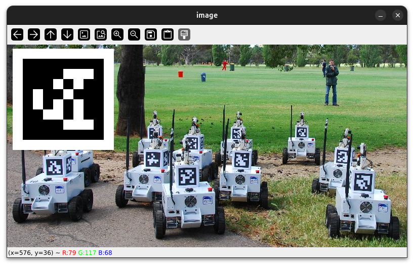
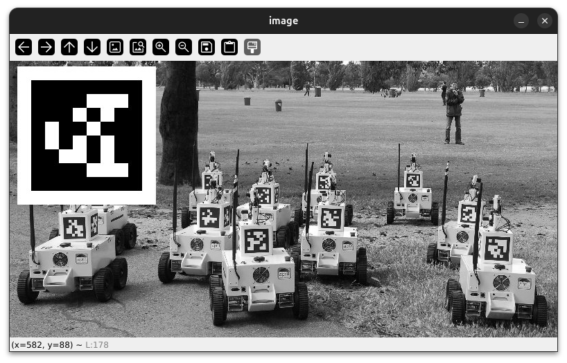
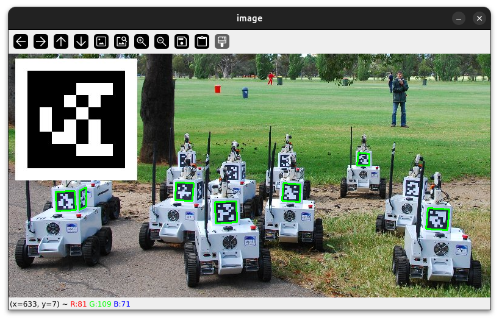

Detecting apriltags with OpenCV and Python
This guide will show you how to use Python and OpenCV to detect Apriltags.
Image sources
You can detect apriltags in any type of image, or use a camera. For this guide I'll use an image from the University of Michigan that includes several apriltags of the 36H11 family.

Instructions
-
Setup environment & install OpenCV
This step will be different depending on what operating system you are on, but all systems generally follow this pattern:
- Ensure Python is installed
- Install a text editor or IDE
- Install opencv and the apriltag library
Linux is the easiest operating system to use for this guide, so if you already have it installed that is perfect.
Python should be installed by default on most Linux distributions. You can ensure it is installed by typing
python3into your terminal. If it fails and you are using debian/ubuntu-based distros, you can use this command to install Python:sudo apt install python3. If you are using some other distribution of Linux then you should see if there is apythonorpython3package available to be installed.If you don't know how to use vim, VSCodium is a good second choice for an editor. You can install it via snap with this command:
snap install codium --classic, or by manually installing the.deb(or.rpm,.AppImage, etc.) from the GitHub releases page.The apriltag project requires cmake to be installed. You can install it by running
sudo apt install cmakeon Ubuntu/Debian-based distributions.The last thing you will need is to install OpenCV and the apriltag library. You can do this by running
pip3 install opencv-python apriltagin your terminal.Download python from https://www.python.org/downloads/windows/, and then install it.
If you are on a team laptop, VSCode should be installed already and you shouldn't need to install an IDE. If this is not the case, then you should install WPILib to get the full suite of FRC software (including WPILib VSCode).
To install the cv2 and apriltag packages on Windows, you can refer to this guide which explains how to explain python packages. The package names are
opencv-pythonandapriltag.You can download Python from here: https://www.python.org/downloads/macos/.
For an IDE, VSCode is an option. Otherwise, you can download the latest
.dmgrelease of VSCodium: https://github.com/VSCodium/vscodium/releases.To install the packages on Mac, just run
pip3 install opencv-python apriltag.You will likely have a hard time trying to follow along this guide using a chromebook, especially if it is a school-issued one. The development environment is very slow and takes a long time to run your code. If possible, switch to a different device.
A Jupyter Lite Notebook might work in the future. Try creating a new notebook with Pyodide and then running this script to install everything you need:
JupyterLite Setup Scriptimport micropip await micropip.install("opencv-python") await micropip.install("apriltag") # This does not workAs of the writing of this guide, the apriltag package cannot be installed within Pyodide.
-
Setup project structure
After installing everything that is required, create a new folder. I suggest somewhere in the
Documentsfolder, but it is up to you. Create a file in your new project folder calledmain.py. This is where all of our Python code will go.If you are going to use the image from the University of Michigan, you should also download it to the same folder and call it
image.jpg. -
Setup the IDE
Open the new
main.pyfile in your text editor or IDE. Put this text in there:Now, try to run it.
On VSCode or VSCodium you can open a terminal window by pressing Ctrl+J. Then, type
python3 main.pyto run your program.In Vim, you can type
<CMD>terminal<CR>(this is the same as :+T+E+R+M+I+N+A+L+Enter) to open a terminal window.It will probably not go where you want it to, so you can type
<C-w>rto flip the windows. (This means Ctrl+W, then R)When you run the program, it should print out "hello world" to the console.
Don't retype everything every time
If you are using the terminal to run your script, you can use the up arrow ( Up ) to skip all the typing after you've run your program once.
-
Add imports
You have already installed OpenCV and the
apriltagpackage, but now we need to use them. Delete everything in yourmain.pyfile and replace it with this:This tells Python that we want to use everything in the
cv2(OpenCV) andapriltagpackages. -
Get a video or photo input
In order to detect apriltags, you will need some kind of photo or video to detect them in.
-
Display the image
You might notice that running your script doesn't appear to do anything yet. This is because we haven't done anything with the image. Let's display it in a new window using OpenCV:
- This creates a new window with a name of the first argument ("image") that displays the second argument (an image)
- This waits until the user presses a key. Without this line the image would only be drawn for a few milliseconds on your screen.
If you run the script now, you should see a window with the image.

-
Convert the image to grayscale
There are at least three channels in the image you just displayed. One for the red contents of the image, one for the blue and one for the green. However, for detecting the apriltag it is much easier to only have a single channel. It is easier for the
apriltagpackage to detect the apriltags if there is no color, so we will convert the image to a grayscale one using OpenCV.main.py# ... gray = cv2.cvtColor(image, cv2.COLOR_BGR2GRAY) # Display the image cv2.imshow("image", gray) cv2.waitKey()Tip
Don't forget to also change the image being displayed by
cv2.imshow, otherwise you will still see the image with color
-
Detect apriltags
The next step is to make use of the
apriltagpackage and detect the apriltags.We first need an
apriltag.Detectorobject to detect the apriltags. It has a few options that you can configure, but for now we will just set the family to 36h11 as that is what my image contains.main.py# ... gray = cv2.cvtColor(image, cv2.COLOR_BGR2GRAY) detector = apriltag.Detector( apriltag.DetectorOptions(families="tag36h11") ) # Display the image cv2.imshow("image", gray) cv2.waitKey()After creating the
detector, we need to tell it to detect apriltags in our image. Here is how to do that:main.py# ... gray = cv2.cvtColor(image, cv2.COLOR_BGR2GRAY) detector = apriltag.Detector( apriltag.DetectorOptions(families="tag36h11") ) results = detector.detect(gray) print(results) # ...Now if you run the script, you should see something like this appear in the console:
[Detection(tag_family=b'tag36h11', tag_id=3, hamming=0, goodness=0.0, decision_margin=83.49791717529297, homography=array([[-1.46298201e+00, -2.33748738e+00, 4.19032887e+01], [ 2.74977265e-01, -5.13138146e-01, 1.24367093e+01], [-2.47093499e-03, -2.80314209e-03, 7.19309551e-02]]), center=array([582.54875941, 172.89787484]), corners=array([[591.97900391, 164.17155457], [591.97235107, 183.00921631], [571.6262207 , 183.00509644], [573.03771973, 162.69270325]])), ...]This isn't very human-readable, but it does give you a lot of information about the apriltags in the image. You can see that it is an array (contained in square brackets) of
Detections, which each have atag_family,tag_id,hamming,goodnessanddecision_marginfields. All of these fields are useful.tag_idis the ID of the apriltag, andcornerscontains an array of points that mark the corners of the apriltag. -
Draw some boxes
Technically, you are now finished. You have detected apriltags in an image using OpenCV. But this kind of result isn't very presentable and also seems pretty boring. Lets draw some boxes around the apriltags to make it look nicer.
main.py# ... for result in results: (corner_a, corner_b, corner_c, corner_d) = result.corners corner_a = (int(corner_a[0]), int(corner_a[1])) corner_b = (int(corner_b[0]), int(corner_b[1])) corner_c = (int(corner_c[0]), int(corner_c[1])) corner_d = (int(corner_d[0]), int(corner_d[1])) line_color = (0, 255, 0) # green line_thickness = 2 # Draw a rectangle using the corners cv2.line(image, corner_a, corner_b, line_color, line_thickness) cv2.line(image, corner_b, corner_c, line_color, line_thickness) cv2.line(image, corner_c, corner_d, line_color, line_thickness) cv2.line(image, corner_d, corner_a, line_color, line_thickness) cv2.imshow("image", image) cv2.waitKey()This uses the
cornersfield found in the last step to draw some boxes around the apriltags. Notice that the lines are drawn on the original image (image), instead of the grayscale version (gray). This allows us to keep the color of the original image alongside the fancy boxes. Remember to change thecv2.imshowparameter back toimagethough, otherwise you won't get to see the boxes.
-
Try other things
Now that you can detect the apriltags, you can do many other things with that information. Here is a list of things you can try, but don't be afraid to do something else entirely:
- Instead of using a single frame from the webcam, try to make it detect apriltags in real time.
- Do Pose Estimation to figure out where the camera is relative to the apriltag
- Draw more annotations on the original image, such as the tag ID or a circle instead of a box.
- The example image used in this guide has apriltags that look easy to detect but are still missed. Figure out why they aren't being detected and then update the program so that it catches them too.
Backlinks
The following pages link to this page: